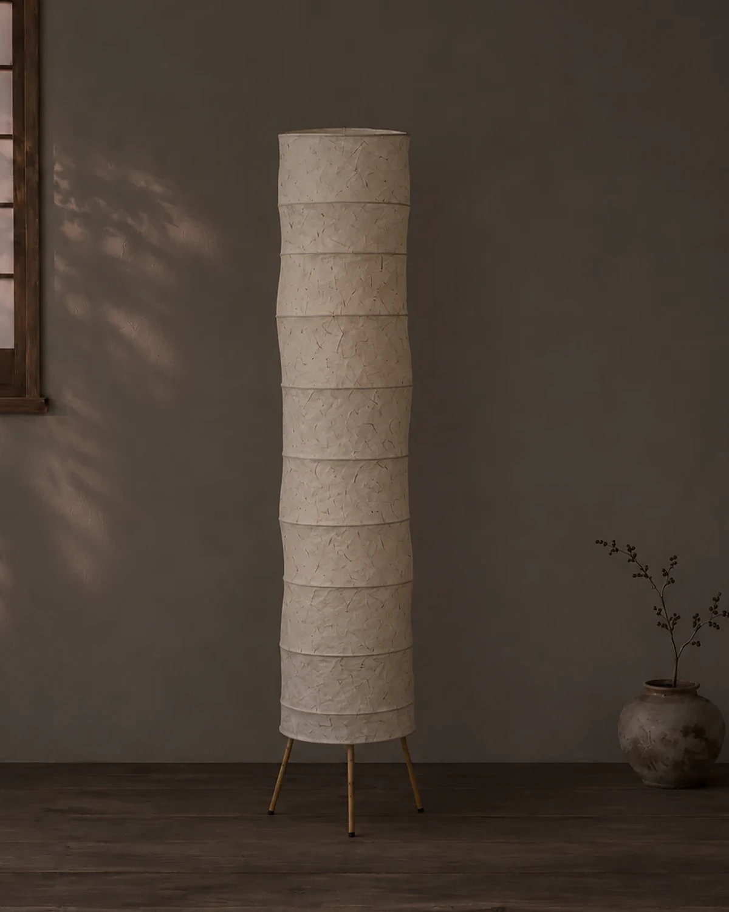

한지는 해가 지나면 조금씩 누래져요. 흠이 아니라 시간이 남긴 색이에요. 불을 켜면 그 색 덕분에 빛이 더 따뜻하게 번져요.
이렇게 지내요
- 먼지는 마른 붓이나 부드러운 천으로 가볍게 털어요. 물걸레는 쓰지 않아요.
- 습한 곳과 창가의 직사광선은 피해요. 한지가 늘어나거나 더 빨리 바래요.
- 한지가 살짝 찢어지면 같은 종이를 작게 잘라 풀로 덧붙여요. 붙인 자국도 그대로 둬요.

함께 낡아 가는 일
새것처럼 지키려 하기보다 함께 낡아 가는 쪽을 택해 보세요. 일 년 뒤 같은 자리에서 보면 색이 달라진 걸 알게 돼요.
바래는 것도 조명의 시간이에요.